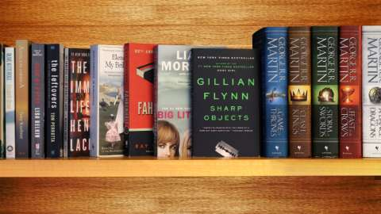
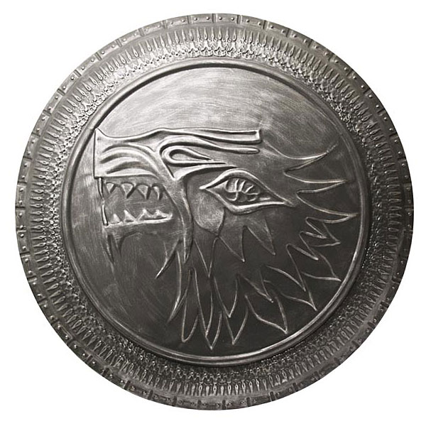
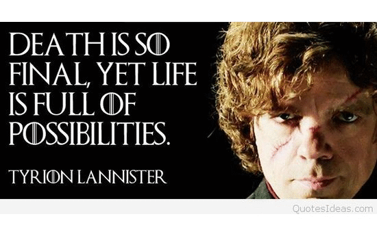

The epic fantasy series Game of Thrones will return for its six-episode, eighth and final season in 2019.
David Benioff & D.B. Weiss, David Nutter and Miguel Sapochnik will be the directors for the new season. Writers for the new season are David Benioff & D.B. Weiss, Bryan Cogman and Dave Hill
Fan of Game of Thrones? 5 Reasons Why Westworld Is for You
Waiting for the final season of GoT and no place to focus your attention? This science-fiction drama is the answer.
Now that the secret is out about Jon Snow, how will fans spend their Reddit-time? If you thought Game of Thrones was ripe with fan-theories, Westworld is next level.

Get Ready For Summer Reading with GOT And More
HBO and The New York Public Library have come together to celebrate
storytelling and the spirit of summer reading with #ReadingIsLit.

Everything You Need To Know To Strat Watching GAME OF THRONES Today

WITH JUST A couple of weeks to go before the premiere of the Game of Thrones series on HBO, excitement among fans is reaching a feverish pitch. The
show — named after the first book in the Song of Ice and Fire series by author George R.R. Martin — is a favorite among both fantasy geeks and mainstream readers alike.
The planned series of seven books is a little more than halfway complete, with Book 5 on the way this summer. It already totals more than 3,500 pages of adventure, battles and backstabbing,
making it an epic tale in every sense of the phrase.
But should the average viewer, let alone hard-core fantasy geeks, really be excited about the television adaptation? Readers have consistently been disappointed
with television and movie adaptations of their favorite books.